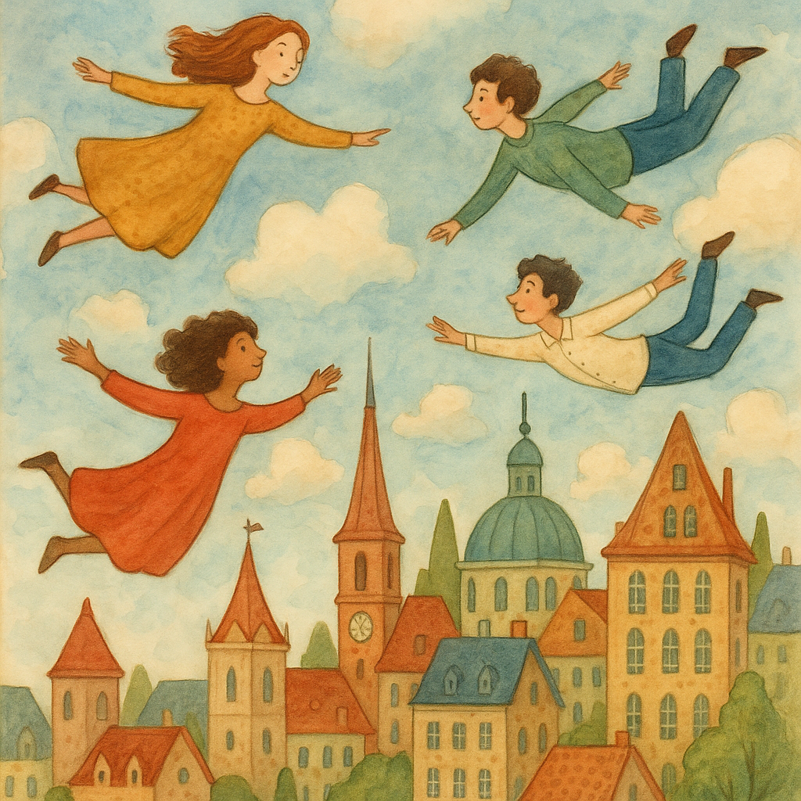
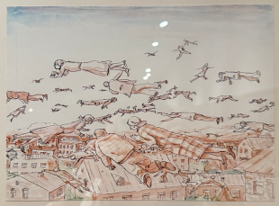

在秦皇岛阿那亚美术馆，充满想象力的飞行场景。

充满想象力的场景
text has image missing
想象力
激发灵感
创意场景

飞行的人物在城市上空
image has text missing
超现实飞行
惊奇
广阔视野


觉得很有想象力，
2025.6，秦皇岛阿那亚的美术馆
G1 飞行的人物在城市 → left [S_image_F1]
G2 充满想象力的场景 → right [S_text_F2]
画布: 1448 × 905 px
规划耗时: 0.36 ms
OmDet: 3 个检测 (book, building, painting, poster, sky, structure)
S_image_F1 crop: [24,14]-[324,233] 来源=omdet 匹配=building(0.52), structure(0.45), sky(0.33) 最高分=0.52
S_text_F2 AI生成图片 (耗时 40382.01ms)